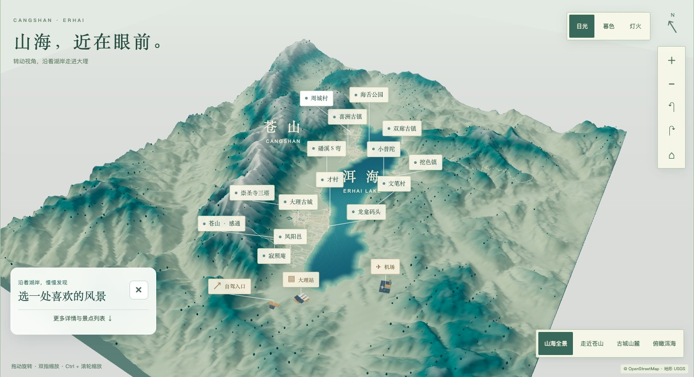
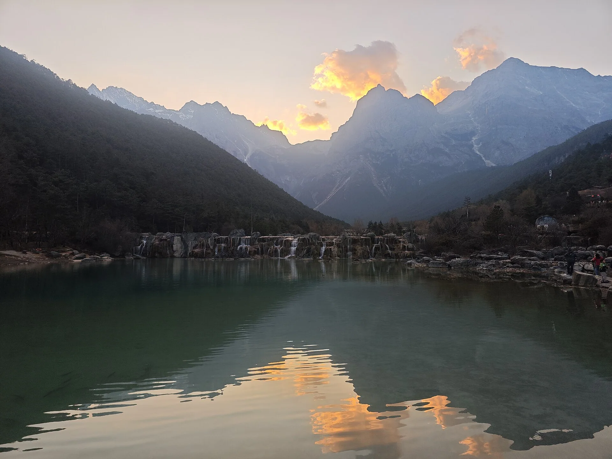
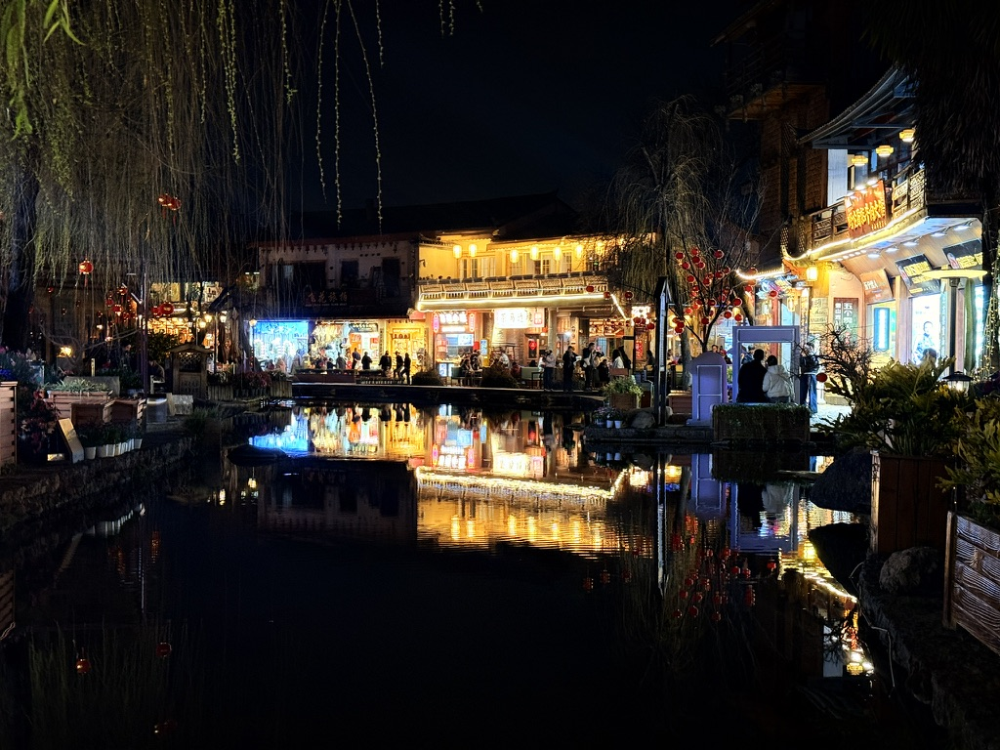

壹 · 山 水 长 卷
云南山水间
把旅途，写进一幅山水。
从雪山的云，
走到洱海的风。
循着山水印记，慢慢出发。
点选地名 · 循着山水印记出发
16 州 · 市 · 2 站已开放山 大理 · 丽江手绘风物 · 地理位置示意
全部州、市 8 个地级市 · 8 个自治州
插画为艺术示意，非实景照片 · AI 辅助绘制轮廓 Natural Earth · 州市分区示意 © OpenStreetMap
从一张地图，到一段旅程。选一段喜欢的路 ↓
展开地图 点选风景，沿着山海慢慢看

山海预览 · 立体画面正在准备正在展开立体山海0%
进入洱海后开始加载
抵达入口景点游览顺序
可拖动地图 · 渔灯为模拟漂游 · 连线表示沿岸方向，非道路导航
ERHAI · THROUGH MY LENS
把洱海的光，留在镜头里。
洱海 · 站长实拍
点击看完整照片，左右滑动继续看。
摄影：站长实拍 · 摄影者保留版权 · 地点：洱海
CHOOSE YOUR OWN PACE
先走一段，再决定去哪里。
跟着镜头预览山海，把喜欢的风景留在自己的行程里。
停留时长为规划参考，不含交通、用餐与排队。开放、预约及交通安排请在出发前确认。
沿着洱海，看见风景
白族扎染 · 国家级非物质文化遗产
一针一线，
 从一块白布开始
从一块白布开始
一针一线，
留下蓝与白。
在苍山脚下的周城，把一块白布扎紧、染蓝，再拆开线结，纹样才慢慢显露。蓝与白之间，藏着白族手艺人的日常。
试着染一块布
先选几个扎结位置，做一块属于你的蓝白纹样。
先选扎结位置，再点“绞扎”，把白布收紧。
纹样为示意。真实手作各不相同，完整工艺还包含多道工序。
白族扎染技艺于2006年列入第一批国家级非物质文化遗产名录。工坊体验的时长与收费请向店家确认。


站长镜头 · 五段夜色束河入夜从牌坊的灯，到水里的光。↗十处风景，留几处给自己。
03古镇慢游04雪山湖谷03高原湖泊
FOLLOW YOUR CURIOSITY
今天，想遇见怎样的丽江？
选一段主题，也可以直接在地图上寻找。
同一主题中的景点，不代表必须在一天内走完。
A JOURNEY, DRAWN ON PAPER
一纸山水，慢慢丽江。
循着屋檐与山色，点一处想去的风景。
远方的湖，另留一页慢慢看。
丽江漫游手绘地图 LIJIANG · FIELD NOTES山水
有约
有约
雪山与三座古镇
八处风景，藏在山水与日常里。
泸沽湖
在丽江城区东北方向，留一段完整旅程。
湖区放大图 · 与主图不同比例
程海
在丽江城区东南方向，去看开阔的湖面。
湖区放大图 · 与主图不同比例
TEN PLACES · YOUR OWN PACE
喜欢哪里，就停在哪里。
10 处风景 · 实景与地方故事
THE LIFE BEHIND THE LANDSCAPE山水之外，
山水之外，
还有生活。
水流穿过街巷，木屋顺着山势排开。丽江古城的空间里，纳西文化与多种建筑传统相遇；白沙的壁画、束河的街巷，则把不同的地方记忆留了下来。走近一座古镇，也是在走近当地人的日常。